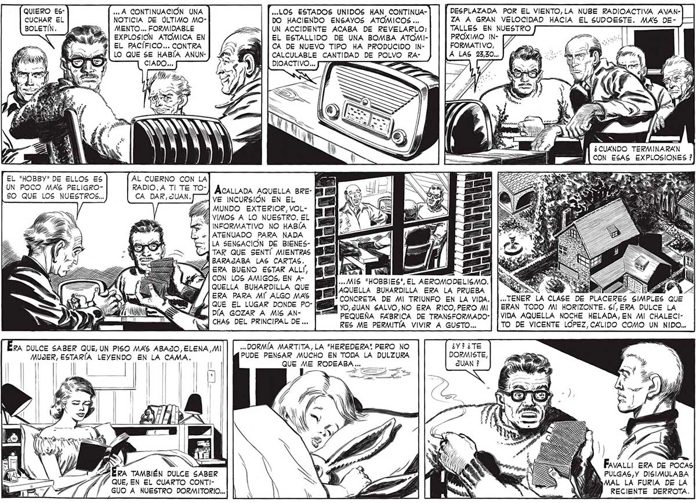

QUIERO ESCUCHAR EL BOLETÍN. EL "HOBBY" DE ELLOS ES UN POCO MAS PELIGROSO QUE LOS NUESTROS... ,.. A CONTINUACIÓN UNA «LOS ESTADOS UNIDOS HAN CONTINUANOTICIA DE ÚLTIMO MO- DO HACIENDO ENSAYOS ATÓMICOS ... MENTO... FORMIDABLE =>3 | UN ACCIDENTE ACABA DE REVELARLO: EXPLOSIÓN ATÓMICA EN á EL ESTALLIDO DE UNA BOMBA ATOMIEL PACIFICO... CONTRA A | CA DE NUEVO TIPO HA PRODUCIDO INLO QUE 5E HABÍA ANUN- e CALCULABLE CANTIDAD DE POLVO RADIOACTIVO... AL CUERNO CON LA RADIO. A Tl TE TO- ÁCALLADA AQUELLA BRECA DAR, JUAN. VE INCURSIÓN EN EL La MUNDO EXTERIOR, VOL2 VIMOS A LO NUESTRO. EL > INFORMATIVO NO HABÍA ATENUADO PARA NADA LA SENSACIÓN DE BIENESTAR QUE SENTÍ MIENTRAS BARAJABA LAS CARTAS. A ERA BUENO ESTAR ALLÍ, DESPLAZADA POR EL VIENTO,LA NUBE RADIOACTIVA AVANZA A GRAN VELOCIDAD HACIA EL SUDOESTE. MAS DETALLES EN NUESTRO PROXIMO INFORMATIVO, A LAS 23,30... ¿CUANDO TERMINARAN CON ESAS EXPLOSIONES ? yA . a Y| CON LOS AMIGOS, EN A- MIS "HOBBIES", EL AEROMODELISMO. QUELLA BUHARDILLA QUE El AQUELLA BUHARDILLA ERA LA PRUEBA dba PARA MI” ALGO MAS * CONCRETA DE MI TRIUNFO EN LA VIDA. ... TENER LA CLASE DE PLACERES SIMPLES QUE y Qade EL LUGAR DONDE Po- YO, JUAN GALVO,NO ERA RICO,PERO MI| | ERAN TODO MI HORIZONTE. SÍ, ERA DULCE LA SM DÍA GOZAR A MIS AN- [e PEQUEÑA FABRICA DE TRANSFORMADO"| | VIDA AQUELLA NOCHE HELADA, EN MI CHALECICHAS DEL PRINCIPAL DE .. RES ME PERMITÍA VIVIR A GUSTO... TO DE VICENTE LOPEZ, CALIDO COMO UN NIDO... ERA DULCE SABER QUE, UN PISO MAS ABAJO, ELENA, MI ... DORMÍA MARTITA,LA "HEREDERA" PERO NO MUJER, E LEYENDO EN LA puma. 5 LA | | a | o pa PUDE PENSAR MUCHO EN TODA LA DULZURA QUE ME A ca | A al 'A TAMBIÉN DULCE SABER QUE, EN EL CUARTO CONTIGUO A NUESTRO DORMITORIO... ¡ ¿Y? ¿TE DORMISTE, f 18 Y Lo ERA DE POCAS PULGAS,Y DISIMULABA MAL LA FURIA DE LA RECIENTE DERROTA. der
